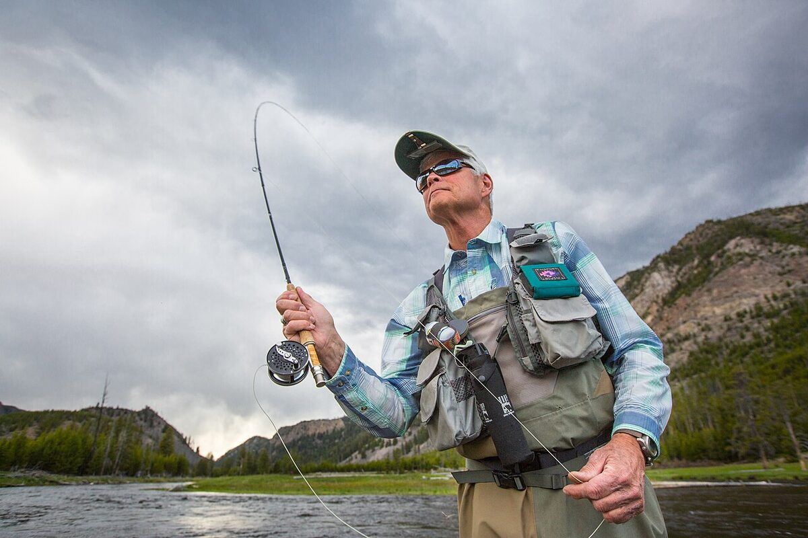

Idea metody i system sprzętu
Na czym polega wędkarstwo muchowe
W każdej innej metodzie to masa przynęty lub obciążenia „niesie" zestaw — w muchówce sztuczna mucha waży ułamki grama, więc nośnikiem jest sam sznur muchowy, gruby i stosunkowo ciężki. Rzut muchowy to rozpędzanie sznura w powietrzu ruchem wędki, aż energia przeniesie się na przypon i muchę. Konsekwencje są dwie: po pierwsze, technika rzutu jest ważniejsza niż w jakiejkolwiek innej metodzie; po drugie, prezentacja może być wyjątkowo delikatna i naturalna — mucha siada na wodzie jak prawdziwy owad. To metoda blisko entomologii: muszkarz obserwuje, czym ryby aktualnie żerują, i dobiera imitację.
Klasy AFTM — wspólny język sprzętu
System AFTM(A) numeruje sznury według masy pierwszych 30 stóp (ok. 9,14 m): od #0–3 (najlżejsze, drobne potoki i delikatne suche muchy), przez #4–6 (uniwersalny środek na pstrąga i lipienia), #7–8 (większe rzeki, streamery, boleń, okoń), po #9–12 (szczupak, łosoś, morze). Wędka, sznur i kołowrotek muszą być w tej samej klasie — kij #5 jest zaprojektowany tak, by ładować się sznurem #5. Na start w polskich warunkach najczęściej poleca się komplet klasy #4–5 o długości 8,6–9 stóp: pokrywa suchą muchę, mokrą i lekką nimfę na większości rzek pstrągowych.
Wędka muchowa
Muchówki mają długość 7–11 stóp; krótsze (7–8 ft) sprawdzają się na zarośniętych potokach, standard 9 ft jest najbardziej uniwersalny, a 10–11 ft ułatwia kontrolę sznura przy nimfowaniu (specjalistyczne kije nimfowe #2–4 mają właśnie 10–11 ft). Akcja: szybka (szczytowa) daje wąską pętlę sznura i radzi sobie z wiatrem; średnia i wolniejsza (paraboliczna) wybacza błędy w timingu i lepiej prezentuje delikatne suche muchy. Początkującym zwykle łatwiej nauczyć się rzutu na akcji średniej lub średnio-szybkiej.
Kołowrotek i backing
Kołowrotek muchowy to z pozoru prosty bęben, ale pełni dwie ważne funkcje: wyważa zestaw (środek ciężkości blisko rękojeści) i hamulcem amortyzuje odjazdy większych ryb, bo hol prowadzi się często „ze szpuli". Dobiera się go do klasy sznura. Pod sznur nawija się backing — 50–100 m cienkiej plecionki zapasowej, która wypełnia szpulę i ratuje przy długich odjazdach. W łowieniu pstrąga i lipienia hamulec pracuje rzadko, ale przy troci, łososiu czy boleniu staje się kluczowy.
Przypony koniczne
Między sznurem a muchą wiąże się przypon koniczny (tapered leader): zwężający się od grubego końca (butt, ok. 0,45–0,55 mm) do cienkiej końcówki (tippet). Stożek przenosi energię rzutu, dzięki czemu przypon prostuje się w powietrzu i mucha ląduje delikatnie na wyprostowanej lince. Grubość końcówki opisuje skala X: 4X ≈ 0,18 mm, 5X ≈ 0,16 mm, 6X ≈ 0,14 mm — im wyższa cyfra, tym cieniej. Standardowa długość to ok. 9 ft; do płochliwych ryb na gładkiej wodzie przypon wydłuża się dowiązanym tippetem do 12 ft i więcej. Zużywający się tippet uzupełnia się ze szpulki, nie wymieniając całego przyponu.
Typy sznurów: pływające, tonące, DT i WF
Sznur pływający (F, floating) to podstawa — obsługuje suchą muchę, nimfę pod wskaźnikiem i płytko prowadzoną mokrą. Sznury tonące (S, sinking) o różnych prędkościach tonięcia oraz końcówki tonące (sink tip, polyleadery) służą do streamera i mokrej muchy na głębszej wodzie. Geometria: DT (double taper) — symetryczny, dwustronnie zbieżny, delikatna prezentacja na krótkim i średnim dystansie, po zużyciu można odwrócić; WF (weight forward) — masa skupiona z przodu, łatwiejsze dalekie rzuty i strzelanie sznurem, dziś najpopularniejszy wybór. Kolor sznura ma mniejsze znaczenie niż kąt padania cienia — jasny sznur łatwiej śledzić, co pomaga w nauce.
Cztery style łowienia na muchę
Sucha mucha
Sucha mucha imituje owada na powierzchni: dorosłe jętki, chruściki, widelnice, owady lądowe (mrówki, koniki polne). To najbardziej widowiskowy styl — branie widzisz jako pierścień lub wyskok ryby do muchy. Klucz to dryf bez smużenia (drag-free): mucha musi płynąć dokładnie z prędkością nurtu, więc rzuca się ze świadomym luzem i mendinguje (poprawia ułożenie sznura na wodzie), zanim nurt go napnie. Muchę impregnuje się płynem lub proszkiem, by dłużej pływała. Klasyczne wzory: Adams, Elk Hair Caddis, CDC, imitacje jętki majowej w sezonie rójki.
Mokra mucha
Mokra mucha to najstarszy styl muchowy: zespół 1–3 much prowadzonych pod powierzchnią, imitujących owady wylęgające się, topielce lub drobne narybkowe formy. Klasyczna technika „down and across": rzut w poprzek i lekko w dół rzeki, sznur napina się i muchy płyną łukiem przez nurt, a branie czuć jako zdecydowane uderzenie w napięty sznur. To dobry styl dla początkujących — wybacza niedoskonały dryf i systematycznie przeczesuje wodę. Tradycyjne wzory: March Brown, mokre palmery, muchy ze skrzydełkiem z piór kuropatwy.
Nimfa — w tym nimfa krótka (czeska)
Nimfy imitują stadia larwalne owadów żyjących przy dnie — a tam pstrąg i lipień zdobywają większość pokarmu, dlatego nimfowanie jest statystycznie najskuteczniejszym stylem. Warianty: nimfa pod wskaźnikiem (suspender) na dłuższym dystansie; nimfa klasyczna na sznurze z kontrolą dryfu; oraz nimfa krótka, zwana czeską lub — w nowszej odmianie — europejską/francuską: krótki sznur lub sam monofil z kolorowym wskaźnikiem w przyponie, zestaw 1–3 obciążonych nimf (tungstenowe główki, ciała z ołowianką) prowadzonych niemal pionowo pod szczytówką długiego, czułego kija. Wędkarz „prowadzi" nimfy z prędkością nurtu przy dnie i reaguje na każde przyhamowanie wskaźnika. Wzory: Pheasant Tail, Hare's Ear, perdigony, czeskie bokówki (czech nymph) imitujące kiełże.
Streamer
Streamer to duża mucha imitująca rybkę, pijawkę lub kiełba, prowadzona aktywnie — ściąganiem sznura ręką (stripping) w rytmie od delikatnych podciągnięć po agresywne szarpnięcia. Łowi się nim większe pstrągi, klenie, bolenie, okonie, a na zestawach klas #8–10 szczupaki. Wymaga mocniejszego sprzętu (#6–8 na rzeki, wyżej na szczupaka), często sznurów z tonącą końcówką i krótszych, mocniejszych przyponów (na szczupaka obowiązkowo z materiałem przyponowym odpornym na zęby). Wzory: Woolly Bugger (prawdopodobnie najbardziej uniwersalny streamer świata), Zonker, muddlery, duże piórkowe imitacje na szczupaka.
Podstawy rzutów muchowych
Rzut podstawowy (overhead cast)
Rzut górny składa się z wymachu do tyłu i do przodu. Najważniejsze zasady: wędka pracuje w wycinku zegara mniej więcej między godziną 10 a 13–14, ruch przyspiesza płynnie i kończy się zdecydowanym zatrzymaniem (stop) — to stop formuje pętlę sznura; po wymachu do tyłu trzeba odczekać, aż sznur się wyprostuje (pauza tym dłuższa, im więcej sznura w powietrzu), inaczej rzut przedni „strzela batem" i ucina muchę. Najczęstsze błędy: łamanie nadgarstka (zbyt szeroki łuk), brak pauzy, forsowanie siłą zamiast techniką. Dwie–trzy godziny ćwiczeń na trawie z kawałkiem włóczki zamiast muchy dają więcej niż cały dzień nad wodą.
Roll cast i rzuty pomocnicze
Roll cast (rzut rolowany) nie wymaga miejsca za plecami: sznur zwisa z wędki uniesionej za głowę, a energiczny ruch w przód „roluje" pętlę po wodzie. Niezbędny pod drzewami i wysokim brzegiem, a przy okazji służy do wyciągania tonącego sznura na powierzchnię. Warto poznać też: mending (przerzucanie brzucha sznura pod prąd dla wydłużenia dryfu), rzut łukowy (reach cast) układający sznur skośnie już w powietrzu oraz fałszywe wymachy (false casts) do wydłużania sznura i suszenia muchy. Na rzekach z ograniczonym zapleczem kasting rolowany bywa używany częściej niż klasyczny rzut górny.
Woda, ryby i sezon
Czytanie wody
Ryba łososiowata stoi tam, gdzie nurt przynosi pokarm, ale nie zmusza do walki z prądem: za kamieniami i przed nimi (poduszka wody), na szwach łączących nurt z wolniejszą wodą, w rynnach przy brzegu, pod nawisami drzew, na ogonach plos (tail), gdzie woda przyspiesza przed bystrzem. Pstrąg potokowy lubi kryjówki — podmyte brzegi, korzenie, głazy; lipień częściej stoi w otwartej, równo płynącej wodzie średniej głębokości, w stadach. Podchodź od dołu rzeki (ryby stoją głową pod prąd), stąpaj cicho i wykorzystuj każdą nierówność terenu — w krystalicznej wodzie górskiej to maskowanie decyduje o powodzeniu częściej niż wzór muchy.
Pstrąg i lipień — dwie różne lekcje
Pstrąg potokowy to drapieżnik terytorialny: bierze zdecydowanie, atakuje też streamery, wybacza nieco grubszy przypon, ale karze hałas i nieostrożne podejście. Lipień to przeciwieństwo — żeruje selektywnie, potrafi wielokrotnie podchodzić do muchy i odmawiać, wymaga cienkich tippetów (5X–6X), drobnych much (nr 16–20) i perfekcyjnego dryfu; za to toleruje obecność wędkarza bliżej niż pstrąg. Brania lipienia z powierzchni są charakterystycznie „spokojne" — z zacięciem trzeba ułamek sekundy poczekać. Obie ryby wypuszczaj z najwyższą ostrożnością: mokre ręce, krótki kontakt, najlepiej wypięcie haczyka bez wyjmowania ryby z wody; haczyki bezzadziorowe są na wielu wodach górskich obowiązkowe.
Okresy i wymiary ochronne
Ryby łososiowate podlegają ścisłej ochronie: pstrąg potokowy ma okres ochronny obejmujący jesienno-zimowe tarło, lipień okres wczesnowiosenny, a oba gatunki — wymiary ochronne, które w zezwoleniach okręgowych bywają podwyższane względem ogólnopolskiego minimum. Daty i wymiary różnią się między okręgami i konkretnymi obwodami rybackimi, dlatego nie podajemy ich tu na sztywno: przed każdym wyjazdem sprawdź aktualny regulamin amatorskiego połowu ryb PZW oraz zezwolenie okręgu, na którego wodach łowisz. Na wodach górskich częste są też dodatkowe rygory: zakaz brodzenia w wybranych okresach, limity dzienne, strefy „no kill" i obowiązek muchy bezzadziorowej.
Łowiska górskie i kraina lipienia
Wody płynące dzieli się klasycznie na krainy: pstrąga (górne, bystre, zimne odcinki o kamienistym dnie), lipienia (środkowe biegi — szersze, wciąż chłodne, o dnie żwirowym i wyraźnych plosach) oraz niżej krainy brzany i leszcza. Dla muszkarza najciekawsze są dwie pierwsze: potoki górskie Karpat i Sudetów oraz rzeki krainy lipienia, jak San poniżej zbiorników solińskich, Dunajec, Poprad czy Bóbr. Wody górskie mają zwykle status łowisk specjalnych z odrębnymi zezwoleniami (często dziennymi), limitami wejść i własnymi regulaminami — ich wymogi bywają bardziej restrykcyjne niż ogólny regulamin PZW i zawsze mają pierwszeństwo. Część najlepszych odcinków to wody krainy pstrąga i lipienia, gdzie metoda muchowa jest jedyną dozwoloną.
FAQ — najczęstsze pytania
Czy muszkarstwo jest trudne i drogie na start?
Trudniejsze niż spinning w pierwszym tygodniu, porównywalne po miesiącu regularnych ćwiczeń rzutowych. Sensowny komplet startowy (kij #5, kołowrotek, sznur WF-F, przypony, pudełko much) można dziś złożyć za kilkaset złotych; największą inwestycją jest czas na naukę rzutu, nie pieniądze.
Od jakiego stylu zacząć?
Najszybsze efekty daje zwykle mokra mucha lub nimfa pod wskaźnikiem — wybaczają niedoskonały dryf. Sucha mucha uczy najwięcej o prezentacji, a nimfa krótka wymaga już pewnego czucia zestawu. Dobrym planem jest sezon na mokrej i nimfie ze sznurem pływającym, potem rozwijanie pozostałych stylów.
Czy na muchę łowi się tylko pstrągi i lipienie?
Nie — muchówka świetnie sprawdza się na klenia, jazia, bolenia, okonia, wzdręgę, a na mocniejszych klasach na szczupaka; coraz popularniejsze jest też muchowe łowienie karpia i ryb morskich. Łososiowate to po prostu klasyka i najlepsza szkoła metody.
Co oznacza „#5" na wędce i sznurze?
To klasa AFTM — umowna masa pierwszych 30 stóp sznura, do której zaprojektowano blank. Wędka #5 najlepiej pracuje ze sznurem #5 (czasem o jedną klasę cięższym przy krótkich rzutach). Niedociążony kij nie wyrzuci sznura, przeciążony traci kontrolę nad pętlą.
Czy mogę brodzić w każdej rzece pstrągowej?
Nie zakładaj tego. Brodzenie bywa zakazane okresowo (ochrona tarlisk i wylęgu) lub całorocznie na wybranych odcinkach, a regulaminy łowisk specjalnych regulują je odrębnie. Sprawdź zezwolenie okręgu PZW i regulamin łowiska przed wejściem do wody — także ze względów bezpieczeństwa przy wyższych stanach wód.
Źródła i weryfikacja
Poradnik przedstawia sprzęt i style wędkarstwa muchowego w ujęciu praktycznym, bez obiecywania konkretnych wyników połowu. Opracowano na podstawie ogólnodostępnej literatury muchowej i powszechnie stosowanej systematyki AFTM. Okresy i wymiary ochronne ryb łososiowatych, zasady brodzenia oraz wymogi dotyczące haczyków i limitów różnią się między wodami i mogą się zmieniać — przed każdym wyjazdem zweryfikuj je w aktualnym regulaminie amatorskiego połowu ryb PZW, zezwoleniu właściwego okręgu i regulaminach łowisk specjalnych.
Prawo a praktyka
Prawo a praktyka — stan na 17 lipca 2026: rozporządzenie ELI opisuje krajowy zakres okresów i wymiarów ochronnych. Ten poradnik przedstawia doświadczenie redakcyjne, nie uniwersalny przepis ani instrukcję legalności. Aktualne zezwolenie i regulamin gospodarza konkretnej wody mogą wprowadzać zasady ostrzejsze i mają pierwszeństwo.